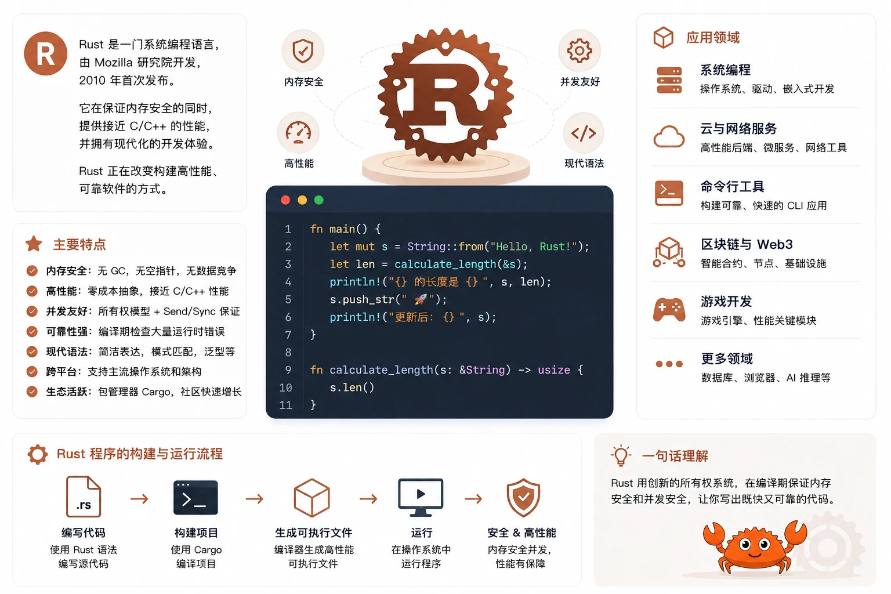

Rust 入門
Rust は Mozilla Research 主導で開発されたシステムプログラミング言語であり、以下のメモリ安全性、ゼロコスト抽象和恐れることのない並行性を中核となる設計目標としています。
Rust は2006年に生まれ、当初は Mozilla の従業員 Graydon Hoare の個人プロジェクトでしたが、その後2009年に Mozilla が正式にスポンサーとなり、チームを結成して開発を進めました。
Rust の設計当初の目的は、C/C++ がシステムプログラミングで長年抱えてきた痛点を解決することでした：メモリ安全性の問題（ヌルポインタ、ダングリングポインタ、バッファオーバーフロー）と並行プログラミングの複雑さ（データ競合、デッドロック）。

Rust の設計哲学は「コンパイル時にバグを撲滅する」ことです。強力な型システムと所有権の仕組みにより、メモリエラーやデータ競合をコンパイラがチェックしてくれます。実行時になってから問題を発見するのではありません。
Rust 言語のマスコットは Ferris という名前のカニで、親しみやすく可愛らしく、Rust コミュニティの友好的で包摂的な文化を象徴しています。
Rust の主要な設計目標は次のようにまとめられます：
| 設計目標 | 説明 |
|---|---|
| メモリ安全性（GCなし） | 所有権システムによりコンパイル時にメモリ安全性を保証し、ガベージコレクタを不要にする |
| ゼロコスト抽象 | 高級言語の機能がコンパイル後も実行時オーバーヘッドを持たず、手書きの低レベルコードと同じ性能になる |
| 恐れることのない並行性 | 型システムと所有権のルールによってコンパイル時にデータ競合を防ぐ |
| 実用性 | OSカーネルもWebアプリも書け、フルスタックのシナリオをカバーする |
| 強力な型推論 | コンパイラがほとんどの型を自動推論し、ボイラープレートコードを減らす |
| 豊富なツールチェーン | Cargo（パッケージ管理＋ビルド）、rustfmt（フォーマット）、clippy（コード検査）がすぐに使える |
Rust言語の発展の歴史
Rust は個人プロジェクトから、世界的に広く採用されるシステム言語になるまで、約20年にわたる発展の道のりを歩んできました。
| 時期 | バージョン/出来事 | 説明 |
|---|---|---|
| 2006年 | 個人プロジェクト | Graydon Hoare が Rust 言語の設計を開始 |
| 2009年 | Mozilla がスポンサーに | Mozilla が Rust の開発を正式に支援し、チームを結成 |
| 2010年 | 初公開 | Mozilla サミットで Rust コンパイラ（OCaml製）を初めて公開 |
| 2011年 | セルフホスティング完了 | Rust コンパイラを Rust 自身で書き直し、OCaml への依存から脱却 |
| 2015年5月 | Rust 1.0 | 最初の安定版がリリースされ、言語が本番環境で正式に使えるようになった |
| 2018年12月 | Rust 2018 Edition | 最初の Edition がリリースされ、構文とモジュールシステムが改善された（NLL借用チェッカーが導入された） |
| 2019年 | 非同期エコシステムが形成 | async/await 構文が安定し、Tokio などの非同期ランタイムが成熟 |
| 2021年 | Rust 財団設立 | AWS、Google、Huawei、Microsoft、Mozilla が共同で Rust 財団を設立 |
| 2021年10月 | Rust 2021 Edition | disjoint capture や IntoIterator for arrays などの改善を導入 |
| 2022年 | Linuxカーネルが採用 | Linux 6.1 で Rust サポートが正式にマージされ、Rust はカーネル開発の第二言語となった |
| 2024年2月 | Rust 2024 Edition | 言語の一貫性と開発者体験をさらに最適化 |
2021年の Rust 財団の設立は画期的な出来事でした。AWS、Google、Huawei、Microsoft、Mozilla の5つのテクノロジー大手が共同で Rust の長期的な独立した発展を保証し、「単一企業による支配」へのコミュニティの懸念を払拭しました。
Rust は6週間ごとの安定版というリリースリズムを採用し、同時にEditionEdition メカニズム（約3年ごとにリリース）によって互換性のない言語変更を処理します。同じプロジェクトで異なる Edition の crate を混在させることができ、コンパイラは後方互換性を保証します。
Rust言語の中核となる特徴
Rust の特長は「安全・高効率・実用」の3つの軸で構成されています。以下では Rust の中核となる言語機能を一つずつ解説します。
所有権システム（Ownership）
所有権は Rust で最もユニークで重要な機能です。コンパイル時にメモリを管理し、ガベージコレクタや手動の malloc/free を必要としません。
所有権には3つの大きなルールがあります：
| ルール | 説明 | 意味 |
|---|---|---|
| すべての値にはただ1つの所有者がいる | ある値は同時に1つの変数にしか所有されない | double-free やダングリングポインタを防ぐ |
| 所有者がスコープを離れると、値は解放される | 変数がスコープを離れるとき、Rust が自動的に drop を呼び出してメモリを解放する | 手動でのメモリ管理が不要 |
| 同時に：可変参照は1つだけ、または不変参照は複数 | 読み書きは排他、読みと読みは共存可能 | コンパイル時にデータ競合を防ぐ |
コード上での実感：変数を別の変数に代入すると所有権が移動（move）し、元の変数は使えなくなります。
例
// s1 が文字列の所有権を取得（データはヒープに保存）
let s1 = String::from("Hello, RUNOOB!");
// 所有権が s1 から s2 に移動し、以降 s1 は無効
let s2 = s1;
// println!("{}", s1); // コンパイルエラー！s1 は move された
println!("{}", s2); // 正しい：s2 が現在の所有者
// 基本型（スタックに格納）は Copy trait を実装しているため、move は発生しない
let x = 42;
let y = x; // i32 は Copy を実装しているので、x はまだ有効
println!("x = {}, y = {}", x, y); // どちらも使用できる
// 不変参照：同時に複数存在できる
let s3 = &s2; // 不変借用
let s4 = &s2; // もう1つの不変借用、許可される
println!("s3 = {}, s4 = {}", s3, s4);
// 可変参照：同時に1つだけ
let mut data = String::from("runoob");
let r = &mut data; // 可変借用
r.push_str("!"); // 可変参照を通して元の値を変更する
println!("変更後: {}", r);
// s3 と s4 のスコープが終了したので、可変参照を作成できる
}
所有権システムは Rust の学習曲線における「急な坂」です。初心者はしばしばコンパイラと「戦います」が、一度理解すれば、コンパイラが阻止するエラーは、C/C++ では致命的な実行時バグになり得ることに気づくでしょう。
パターンマッチ（Pattern Matching）
Rust のmatch式は非常に強力で、コンパイラは網羅性チェックすべてのケースをチェックし、分岐の漏れがないことを保証します。
例
// match と数値のマッチング
let score = 85;
match score {
90..=100 => println!("RUNOOB 評価: A"), // 範囲マッチング
60..=89 => println!("RUNOOB 評価: B"),
0..=59 => println!("RUNOOB 評価: C"),
_ => println!("無効なスコア"), // ワイルドカード、残りのすべてのケースにマッチ
}
// match でタプルを分解
let pair = (3, 7);
match pair {
(0, y) => println!("最初は 0、2 番目は {}", y),
(x, 0) => println!("最初は {}、2 番目は 0", x),
(x, y) => println!("2 つの値: {} と {}", x, y),
}
}
列挙型と Option/Result
Rust の列挙型（enum）はデータを保持でき、match と組み合わせることで安全かつ表現力の高い制御フローを実現できます。
標準ライブラリのOption<T> 和 Result<T, E>は2つの最も中核となる列挙型であり、「null の可能性」と「エラーの可能性」をそれぞれ扱います。Rust には null も例外もありません。
例
fn main() {
// Option<T>: 値が存在する場合も存在しない場合もある（null の代替）
let numbers = vec![10, 20, 30];
let first = numbers.get(0); // Option<&i32> を返す
let missing = numbers.get(5); // Option<&i32> を返す
match first {
Some(&val) => println!("最初の要素: {}", val),
None => println!("見つかりませんでした"),
}
// より簡潔な書き方：if let
if let Some(&val) = missing {
println!("見つかりました: {}", val);
} else {
println!("インデックス 5 は存在しません"); // この分岐に入ることを期待
}
// Result<T, E>: 操作は成功するか失敗する可能性がある（例外の代替）
let content = fs::read_to_string("config.txt");
match content {
Ok(text) => println!("ファイルの内容: {}", text),
Err(e) => println!("読み取り失敗: {}", e),
}
}
Rust には null 値も try-catch 例外機構もありません。Option と Result はコンパイル時に強制的に処理されます。チェックを忘れると、コードはコンパイルを通りません。これにより、ヌルポインタ例外と未捕捉例外は根本的に排除されます。
ゼロコスト抽象
Rust の高階機能（イテレータ、クロージャ、ジェネリクス）は、コンパイル後には手書きの低レベルループと完全に等価になり、追加の実行時オーバーヘッドは発生しません。
つまり、関数型に似たスタイルでコードを書きながら、C と同じ高性能を得ることができます。
例
let data = vec![1, 2, 3, 4, 5, 6, 7, 8, 9, 10];
// イテレータのチェーン呼び出し —— 高度な抽象化のように見える
// コンパイル後は手書きの for ループと等価な機械語に展開される
let result: Vec<i32> = data
.iter() // イテレータを取得
.filter(|&x| x % 2 == 0) // 偶数をフィルタリング
.map(|&x| x * x) // 平方を求める
.collect(); // Vec として収集
println!("{:?}", result); // [4, 16, 36, 64, 100]
}
恐れることのない並行性（Fearless Concurrency）
Rust の型システムと所有権規則はコンパイル時にデータ競合を排除します。Send と Sync トレイトは、型がスレッド間で安全に受け渡しまたは共有できるかどうかを自動的にマークします。
マルチスレッドでスレッドセーフでないデータを共有しようとすると、コンパイラは直接エラーを報告します。本番実行時になって謎の並行バグが発生するのを待つ必要はありません。
例
use std::thread;
fn main() {
// Arc（原子参照カウント）はマルチスレッド間で所有権を共有するために使う
// Mutex は相互排他アクセスを提供する
let counter = Arc::new(Mutex::new(0));
let mut handles = vec![];
for i in 0..10 {
// Arc を clone して、各スレッドが同じデータへの参照を保持する
let counter = Arc::clone(&counter);
let handle = thread::spawn(move || {
// lock() で相互排他ロックを取得し、MutexGuard を返す
let mut num = counter.lock().unwrap();
*num += 1; // 参照外し（deref）で内部の値を変更する
println!("スレッド {} の加算が完了、現在の値: {}", i, *num);
});
handles.push(handle);
}
// すべてのスレッドの完了を待つ
for handle in handles {
handle.join().unwrap();
}
println!("最終カウント: {}", *counter.lock().unwrap());
}
Cargo：統合的なビルドツール
Cargo は Rust 公式のパッケージマネージャ兼ビルドシステムであり、依存関係管理、コンパイル、テスト、ドキュメント生成、公開機能を統合しています。
C/C++ エコシステムで CMake/Makefile やパッケージマネージャを手動で設定する分散的な体験と比較して、Cargo は「すぐに使える」統合体験を提供します。
| コマンド | 機能 | 典型的なシナリオ |
|---|---|---|
| cargo new project | 新規プロジェクトの作成 | プロジェクトを初期化し、Cargo.toml と src/main.rs を自動生成する |
| cargo build | プロジェクトをコンパイル（debug モード） | 開発・デバッグ |
| cargo build --release | プロジェクトをコンパイル（最適化モード） | 本番リリース、すべてのコンパイラ最適化を有効化 |
| cargo run | コンパイルして実行 | コードをすばやくテスト |
| cargo test | テストを実行 | ユニットテスト、統合テスト、ドキュメントテスト |
| cargo check | コードがコンパイルできるかすばやく確認（バイナリを生成しない） | IDE でのリアルタイム構文チェック |
| cargo doc --open | ドキュメントを生成して開く | 依存ライブラリの API ドキュメントを閲覧 |
| cargo clippy | コードスタイルチェック（lint） | 推奨されない書き方や潜在的な問題を発見 |
| cargo fmt | コードフォーマット | コードスタイルを統一 |
| cargo publish | crates.io に公開 | オープンソースライブラリを公開 |
cargo check は開発中に非常に便利なコマンドです。構文と型のみをチェックし、実行可能ファイルを生成しないため、cargo build よりはるかに高速です。ほとんどの IDE の Rust プラグインは、ファイル保存時に自動的に cargo check を実行します。
Rust言語の応用分野
Rust はメモリ安全性と高性能という利点により、複数の分野で急速に拡大しています。
システムプログラミングと高性能サーバーサイド
これは Rust の「本領」です。究極のパフォーマンスと高いメモリ安全性が求められるシナリオに適しています。非同期ランタイムTokioと Web フレームワークActix Web、Axum高並行シナリオで優れた性能を発揮します。
WebAssembly
Rust はWebAssembly へのコンパイルに最適な言語の一つです。そのゼロコスト抽象化と GC なしの特性により、Wasm 成果物はサイズが小さく、高性能です。
フロントエンドフレームワークYew 和 LeptosRust で SPA アプリケーションを書くことができます。Figma、Cloudflare Workers などは本番環境で Rust + Wasm を多用しています。
組み込みとIoT
Rust のno_stdモードは、OS のないベアメタル上での実行を可能にし、MCU、センサーなどのリソース制約のあるデバイスに適しています。
RTIC（リアルタイム割り込み駆動並行フレームワーク）とEmbassy（非同期組み込みフレームワーク）は、組み込み Rust の代表的なプロジェクトです。
CLI ツール
Rust は独立したバイナリファイルにコンパイルされ、性能が優れているため、数多くのスター CLI ツールを生み出しました：
| ツール | 機能 | 代替対象 |
|---|---|---|
| ripgrep (rg) | 超高速コード検索 | grep |
| fd | 高速ファイル検索 | find |
| bat | 構文ハイライト付きファイル表示 | cat |
| delta | 構文ハイライト付き Git diff | git diff |
| zoxide | スマートなディレクトリ移動 | cd |
| dust | ディスク容量分析 | du |
ブロックチェーンとWeb3
Rust はブロックチェーン分野で重要な地位を占めています。Solanaチェーンのコアは Rust で書かれており、Sui、Aptos、Polkadot（Substrate）などの新しいパブリックチェーンもすべて Rust を主要開発言語としています。
データベースとデータ基盤
高性能データベースとデータ処理システムは Rust の強みのある分野です：TiKV（分散 KV ストア、TiDB のストレージ層）、SurrealDB、Polars（DataFrame ライブラリ）、Databend（クラウドデータウェアハウス）などはすべて Rust で構築されています。
オペレーティングシステムと基盤インフラ
Rust は Linux カーネル（6.1+）に採用され、Google は Android で Rust を使って Bluetooth と Wi-Fi スタックを書き直し、Microsoft も Windows カーネルで Rust を使って一部のコンポーネントを書き直しています。
趣味のプロジェクトとしては、Redox OSは、Rust でゼロから完全に書かれた Unix 系オペレーティングシステムです。
クイックスタート
Rust 公式は非常に便利なインストールツール rustup を提供しており、1 つのコマンドでコンパイラ、パッケージマネージャ、ドキュメントを導入できます。
Rustのインストール
# Unix/macOS $ curl --proto '=https' --tlsv1.2 -sSf https://sh.rustup.rs | sh # 验证安装 $ rustc --version rustc 1.85.0 (4d91de4e4 2025-02-17) $ cargo --version cargo 1.85.0
最初のRustプログラム
Cargo を使ってプロジェクトを作成するのが最も推奨される方法で、標準的なプロジェクト構造を自動生成します。
# 创建新项目
$ cargo new hello_runoob
Created binary (application) `hello_runoob` package
# 项目结构
hello_runoob/
├── Cargo.toml # 项目元数据和依赖配置
└── src/
└── main.rs # 程序入口文件
Cargo.toml はプロジェクトの設定ファイルで、Node.js の package.json に似ています：
例
name = "hello_runoob" # パッケージ名（必須、アンダースコアで区切る）
version = "0.1.0" # バージョン番号（必須、セマンティックバージョニングに従う）
edition = "2024" # Rust Edition（必須、言語の構文規則に影響）
[dependencies]
# ここでプロジェクトの依存関係を宣言します。例：
# serde = { version = "1.0", features = ["derive"] }
デフォルトで生成される main.rs には、最も単純な Hello World プログラムが含まれています：
例
// Rust プログラムのエントリポイント：すべての実行可能プログラムには main 関数が必要
fn main() {
// println! はマクロです（末尾の ! 記号に注意）
// マクロはコンパイル時により複雑なコードに展開される
println!("Hello, RUNOOB!");
println!("Rust言語の世界へようこそ");
}
# 编译并运行
$ cargo run
Compiling hello_runoob v0.1.0
Finished `dev` profile [unoptimized + debuginfo] target(s) in 0.52s
Running `target/debug/hello_runoob`
Hello, RUNOOB!
欢迎来到 Rust 语言的世界
基本構文の概要
Rust の構文は、関数型言語とシステム言語の利点を取り入れています。以下では、最もよく使われる構文要素を簡単に説明します。各サンプルは、そのまま実行できる完全なプログラムです。
変数と可変性
Rust の変数デフォルトで不変（イミュータブル）。これにより開発者は、どのデータが変化するかを明示的に示す必要があり、コードの意図が明確になり、コンパイラの最適化も容易になります。
例
// 不変変数（デフォルト）：宣言後に再代入できない
let name = "RUNOOB";
// name = "other"; // コンパイルエラー！不変変数は再代入できない
println!("名前: {}", name);
// 可変変数：mut キーワードで明示的に宣言
let mut score = 0;
println!("初期スコア: {}", score);
score = 100; // 変更可能
println!("更新後のスコア: {}", score);
// 変数シャドーイング：let で同名の変数を再宣言
let x = 5;
let x = x + 1; // 新しい変数 x が古い x を覆い隠し、値は 6
let x = x * 2; // 再度シャドーイングし、値は 12
println!("x の最終値: {}", x);
// 定数：コンパイル時に確定し、型の注釈が必須。命名は全て大文字が慣例
const MAX_POINTS: u32 = 100_000;
println!("最大ポイント: {}", MAX_POINTS);
}
変数シャドーイングと mut は同じものではありません。シャドーイングは let で同名の新しい変数を宣言し直すことで、型を変更できます。一方 mut は同じ変数の値の変更を許可するだけで、型は変わりません。
基本データ型
Rust は静的型付け言語であり、コンパイラはコンパイル時にすべての変数の型を把握している必要があります。
| カテゴリ | 型 | 例 | 説明 |
|---|---|---|---|
| 符号付き整数 | i8, i16, i32, i64, i128, isize | let x: i32 = -42; | デフォルトの整数型は i32 |
| 符号なし整数 | u8, u16, u32, u64, u128, usize | let y: u64 = 100; | usize はインデックスと長さに使用 |
| 浮動小数点数 | f32, f64 | let pi: f64 = 3.14; | デフォルトの浮動小数点型は f64 |
| ブール値 | bool | let ok: bool = true; | true または false |
| 文字 | char | let c = 'R'; | 4バイトで、Unicode スカラー値を表す |
| タプル | (T1, T2, ...) | let t: (i32, f64) = (10, 3.14); | 固定長で、型は異なってもよい |
| 配列 | [T; N] | let a: [i32; 3] = [1, 2, 3]; | 固定長で、型は同じ。スタックに割り当てられる |
| スライス | &[T] | let s: &[i32] = &a[..]; | 配列または Vec への参照ビュー |
| 動的配列 | Vec<T> | let v: Vec<i32> = vec![1,2,3]; | 可変長で、ヒープに割り当てられる |
| 文字列 | String / &str | let s = String::from("hi"); | String は変更可能、&str は参照 |
制御フロー
Rust の制御フローには次が含まれますif、loop、while、for 和 match。このうち if と loop は式として値を返すことができます。
例
let score = 75;
// if は式であり、値を返せる（各分岐は同じ型を返す必要がある）
let grade = if score >= 90 {
"A"
} else if score >= 60 {
"B"
} else {
"C"
};
println!("RUNOOB 評価: {}", grade);
// loop は無限ループ（break で終了、戻り値を返せる）
let mut count = 0;
let result = loop {
count += 1;
if count == 5 {
break count * 2; // break の後に値を置くと、それが loop の戻り値になる
}
};
println!("loop の戻り値: {}", result);
// while 条件ループ
let mut n = 3;
while n > 0 {
println!("カウントダウン: {}", n);
n -= 1;
}
// for in による反復（最も一般的）
let items = ["apple", "banana", "cherry"];
for (i, item) in items.iter().enumerate() {
println!("{} 番目: {}", i + 1, item);
}
// for in レンジ（範囲）反復
for num in 1..=3 { // 1..=3 は 1, 2, 3 を表す（両端を含む）
println!("数: {}", num);
}
}
関数
Rust の関数はfnキーワードで宣言します。引数と戻り値には型を明示的に指定する必要があります。最後の式の値が戻り値になります（return キーワードは不要）。
例
fn add(a: i32, b: i32) -> i32 {
a + b // 最後の式が自動的に戻り値になる（末尾にセミコロンがないことに注意）
}
// 複数の戻り値：タプルを使って複数の値を返す
fn divide(a: f64, b: f64) -> (f64, String) {
if b == 0.0 {
return (0.0, String::from("エラー：除数をゼロにできません"));
}
(a / b, String::from("OK")) // タプルを返す
}
// ジェネリック関数：trait bound で型パラメータの振る舞いを制約する
fn largest<T: PartialOrd>(list: &[T]) -> &T {
let mut largest = &list[0];
for item in list {
if item > largest {
largest = item;
}
}
largest
}
fn main() {
// 通常の関数を呼び出す
let sum = add(10, 20);
println!("10 + 20 = {}", sum);
// 複数の戻り値を持つ関数を呼び出す
let (result, msg) = divide(10.0, 2.0);
println!("10 / 2 = {} ({})", result, msg);
// ゼロ除算の場合
let (result, msg) = divide(10.0, 0.0);
println!("10 / 0 = {} ({})", result, msg);
// ジェネリック関数を呼び出す
let nums = vec![3, 7, 2, 9, 5];
println!("RUNOOB 最大値: {}", largest(&nums));
}
構造体と impl ブロック
Rust ではstructstruct を使用してデータ構造を定義し、implimpl ブロックで構造体にメソッドを実装します。これは Go のメソッド定義に似ていますが、言語の構成はよりコンパクトです。
例
struct User {
name: String, // String 型。データの所有権を持つ
email: String,
active: bool,
login_count: u64, // u64 符号なし64ビット整数
}
// impl ブロックで User にメソッドを実装
impl User {
// 関連関数（静的メソッドに類似）：新しいインスタンスを作成
fn new(name: String, email: String) -> User {
User {
name,
email,
active: true, // デフォルト値
login_count: 0, // デフォルト値
}
}
// メソッド：&self はインスタンスへの不変参照を表す
fn summary(&self) -> String {
format!("{} ({}) - ログイン回数: {}", self.name, self.email, self.login_count)
}
// メソッド：&mut self はインスタンスへの可変参照を表す
fn login(&mut self) {
self.login_count += 1;
}
}
fn main() {
// 関連関数を使ってインスタンスを作成
let mut user = User::new(
String::from("runoob"),
String::from("runoob@example.com"),
);
println!("{}", user.summary());
// ログインをシミュレート
user.login();
user.login();
println!("ログイン {} 回", user.login_count);
}
よく使う例
以下では、実際のシナリオに近い2つの完全な例を通して、Rust の実開発における典型的な使い方を示します。
HTTP APIサービスの構築
Axum フレームワーク（Tokio 非同期ランタイムベース）を使用して、JSON レスポンスを返す HTTP API を構築します。
まず Cargo.toml に依存関係を追加します：
# Cargo.toml
[dependencies]
axum = "0.8" # Web 框架
tokio = { version = "1", features = ["full"] } # 异步运行时
serde = { version = "1", features = ["derive"] } # 序列化
serde_json = "1" # JSON 支持
例
use axum::{
extract::Query,
response::Json,
routing::get,
Router,
};
use serde::{Deserialize, Serialize};
use std::collections::HashMap;
// リクエストパラメータ構造体（デシリアライズ）
#[derive(Deserialize)]
struct HelloParams {
name: Option<String>, // Option はオプションのパラメータを表す
}
// レスポンス構造体（シリアライズ）
#[derive(Serialize)]
struct ApiResponse {
code: u16,
message: String,
data: Option<HashMap<String, String>>, // オプションのデータフィールド
}
// GET /hello リクエストを処理
// Query(HelloParams) が URL のクエリパラメータから name を自動的に抽出
async fn hello_handler(Query(params): Query<HelloParams>) -> Json<ApiResponse> {
let name = params.name.unwrap_or_else(|| String::from("RUNOOB"));
let mut data = HashMap::new();
data.insert("name".to_string(), name.clone());
Json(ApiResponse {
code: 200,
message: format!("こんにちは、{}！Rust HTTP サービスへようこそ", name),
data: Some(data),
})
}
// #[tokio::main] マクロは async fn main を Tokio ランタイムに変換する
#[tokio::main]
async fn main() {
// ルーティングを構築
let app = Router::new()
.route("/hello", get(hello_handler));
// アドレスにバインドしてサービスを起動
let listener = tokio::net::TcpListener::bind("0.0.0.0:8080")
.await
.unwrap();
println!("RUNOOB サーバー起動、リスニングアドレス: http://localhost:8080");
println!("アクセス例: http://localhost:8080/hello?name=Rust開発者");
axum::serve(listener, app).await.unwrap();
}
$ cargo run
RUNOOB 服务器启动，监听地址: http://localhost:8080
访问示例: http://localhost:8080/hello?name=Rust开发者
# 使用 curl 测试
$ curl http://localhost:8080/hello?name=Rust开发者
{"code":200,"message":"你好，Rust开发者！欢迎访问 Rust HTTP 服务","data":{"name":"Rust开发者"}}
$ curl http://localhost:8080/hello
{"code":200,"message":"你好，RUNOOB！欢迎访问 Rust HTTP 服务","data":{"name":"RUNOOB"}}
Axum は Rust エコシステムで最も人気のある Web フレームワークの1つで、Tokio チームによってメンテナンスされています。Rust の型システムを最大限に活用し、ルートパラメータの抽出や状態の共有などの操作をコンパイル時にチェックすることで、実行時エラーを大幅に削減します。
ファイル一括処理ツール
これは実際のシナリオに近い CLI ツールです。ディレクトリを再帰的に走査し、すべてのファイルの行数とサイズを集計し、拡張子ごとに分類してまとめます。
Cargo.toml に依存関係を追加します：
# Cargo.toml [dependencies] walkdir = "2" # 递归遍历目录
例
use std::collections::HashMap;
use std::fs;
use walkdir::WalkDir; // ディレクトリを再帰的に走査するサードパーティライブラリ
fn main() {
let path = "."; // 現在のディレクトリからスキャン開始
// 統計情報：ファイル拡張子ごとにグループ化
// HashMap<拡張子, (ファイル数, 総行数, 総バイトサイズ)>
let mut stats: HashMap<String, (usize, usize, u64)> = HashMap::new();
// WalkDir はディレクトリを再帰的に走査し、隠しファイルと .git ディレクトリを自動的にスキップ
for entry in WalkDir::new(path)
.into_iter()
.filter_map(|e| e.ok()) // アクセスできないエントリをフィルタリング
.filter(|e| e.file_type().is_file()) // ファイルのみ処理する
{
// ファイル拡張子を取得する
let ext = entry
.path()
.extension()
.and_then(|e| e.to_str())
.unwrap_or("(拡張子なし)")
.to_lowercase();
// ファイルの内容を読み取る（テキストファイルのみ。バイナリファイルは文字化けする可能性があるが統計には影響しない）
if let Ok(content) = fs::read_to_string(entry.path()) {
let line_count = content.lines().count();
let size = entry.metadata().map(|m| m.len()).unwrap_or(0);
let (count, lines, total_size) = stats.entry(ext).or_insert((0, 0, 0));
*count += 1;
*lines += line_count;
*total_size += size;
}
}
// ファイル数で降順に並べて出力する
let mut sorted: Vec<_> = stats.into_iter().collect();
sorted.sort_by(|a, b| b.1 .0.cmp(&a.1 .0));
println!("=== RUNOOB ディレクトリファイル統計 ===");
println!("{:<15} {:>8} {:>10} {:>12}", "拡張子", "ファイル数", "総行数", "総サイズ(bytes)");
println!("{}", "-".repeat(50));
for (ext, (count, lines, size)) in &sorted {
println!("{:<15} {:>8} {:>10} {:>12}", ext, count, lines, size);
}
}
$ cargo run --release === RUNOOB 目录文件统计 === 扩展名 文件数 总行数 总大小(bytes) -------------------------------------------------- rs 12 856 28432 toml 3 45 1534 md 2 120 3412 html 1 510 14256 (无扩展名) 1 8 210
よく使うツールとコマンド早見表
Cargo の標準機能以外にも、Rust エコシステムは開発効率を高める一連のツールを提供しています：
| コマンド | 機能 | 説明 |
|---|---|---|
| rustup update | Rust ツールチェーンを更新する | rustc、cargo などを最新の安定版にアップグレードする |
| rustup component add rustfmt | コードフォーマッタツールをインストールする | 保存時にコードを自動フォーマットする |
| rustup component add clippy | コード検査ツールをインストールする | 推奨されない書き方や潜在的なバグを発見する |
| rustup doc | ローカルドキュメントを開く | 標準ライブラリと The Book をオフラインで参照する |
| cargo add <crate> | 依存関係を追加する | Cargo.toml を自動編集して最新バージョンを取得する |
| cargo update | 依存関係のバージョンを更新する | Cargo.toml のバージョン制約に基づいて Cargo.lock を更新する |
| cargo tree | 依存関係ツリーを表示する | プロジェクトの完全な依存関係を視覚化する |
| cargo bench | ベンチマークテストを実行する | コードのパフォーマンスを計測する |
| cargo install <tool> | Rust で書かれた CLI ツールをインストールする | 例：cargo install ripgrep |
注意事項とよくある質問
以下は、Rust 初心者が最も直面しやすい課題とベストプラクティスの提案です。
コンパイラと「戦う」のは普通
Rust の学習曲線は、最初は急で後半は緩やかであると広く認められています。所有権と借用チェックは初心者の頃の最大の障壁です。
書いたコードがコンパイラに何度も拒否されても、落ち込まないでください——それはまさにコンパイラが潜在的な実行時バグを防いでくれている証拠です。経験を積むにつれて、Rust の流儀で考えることに徐々に慣れ、コンパイラは敵ではなく最も頼りになるパートナーになるでしょう。
String と &str の違い
これは Rust 初心者が最も混同しやすい概念です。Stringは所有権を持つヒープ割り当て文字列（変更可能）です。&strは文字列データへの不変参照（借用したビュー）で、通常は &String から自動的にデリファレンスされます。
例
// String: 所有権を持ち、変更可能で、ヒープ上にある
let mut s = String::from("Hello");
// &str: 参照であり、変更不可、通常は関数の引数として使われる
let slice: &str = "RUNOOB"; // 文字列リテラル自体が &str である
s.push_str(", world!"); // String は変更可能
println!("{}", s);
println!("{}", slice);
// 関数の引数には String ではなく &str を選ぶ方が柔軟
greet("RUNOOB"); // &str を直接渡せる
greet(&s); // &String から自動的に &str に変換して渡すこともできる
}
fn greet(name: &str) {
println!("こんにちは、{}！", name);
}
エラー処理：panic! vs Result
Rust は区別します回復不能なエラー（使用するpanic!、プログラムは終了）と回復可能なエラー（使用するResult、呼び出し側が処理方法を決定する）。
ライブラリコードでは、panic! ではなく Result を返し、呼び出し側に選択権を与えるべきです。アプリケーションでは、状況に応じて判断できます。
unsafe：慎重に使うが、必要
Rust はunsafeunsafe キーワードを提供しており、裸のポインタ操作、外部関数呼び出し（FFI）などの低レベル操作を可能にします。
unsafe は「安全チェックの無効化」ではなく、コンパイラが自動的に保証できない部分の安全責任を開発者が負うことを意味します。ほとんどのアプリケーションコードでは unsafe を使う必要はありません——頻繁に使っていることに気づいたら、設計を見直す必要があるかもしれません。
コンパイル時間が長い
Rust はコンパイル時間が長いことで知られています。特に大規模プロジェクトでは顕著です。これは、コンパイラがコンパイル時に多くの検査（所有権分析、ライフタイム検証、trait 解決など）と最適化を行うためです。
軽減策：使用するcargo checkcargo build の代わりに日常開発を行う；大きな crate をサブ crate に分割してインクリメンタルコンパイルを活用する；使用するsccacheコンパイル結果をキャッシュする；ハードウェアをアップグレードする（特に SSD とより多くの CPU コア）。
学習パスの提案
Rust 初心者には、以下の学習順序をお勧めします：
- 通読するThe Rust Programming Language（公式の書籍、無料）、所有権の章を重点的に理解する
- Rust Playground（play.rust-lang.org）で読みながら書き、即座にコンパイラからのフィードバックを得る
- を通じてRustlings小さな練習問題を解いて、構文を定着させる
- 読むRust by Example、実例を通して学ぶ
- 自分がよく知っている小さなプロジェクトを Rust で書き直してみて、実践を通して Rust の設計トレードオフを理解する
まとめ
Rust はメモリ安全性（GC なし）、ゼロコスト抽象和恐れることのない並行性（fearless concurrency）という 3 つの核となる強みにより、システムプログラミング、高性能サービス、WebAssembly、ブロックチェーンなどの分野で独自のエコシステム的位置を確立しています。
学習曲線は急ですが、コンパイラの厳格な検査は長期的なプロジェクトにおいて非常に高いコード品質と保守性をもたらします——これが、ますます多くの企業やオープンソースプロジェクトが Rust を選ぶ理由です。
Rust の強みと適用シーンは以下の通りです：
| 観点 | Rust の特徴 |
|---|---|
| 学習曲線 | 比較的急（所有権システムの理解と適応が必要）だが、概念は安定しており、習得後は生涯にわたって役立つ |
| コンパイル速度 | 比較的遅い（多くのコンパイル時チェックがある）が、cargo check とインクリメンタルコンパイルで軽減できる |
| 実行時パフォーマンス | C/C++ と同等で、GC を持つ言語をはるかに上回る |
| メモリ安全性 | コンパイル時に保証され、GC 不要、ヌルポインタ、ダングリングポインタ、バッファオーバーフローがない |
| 並行性の安全性 | コンパイル時にデータ競合を排除し、並行性を恐れない |
| エコシステムの成熟度 | 急速に成長しており、システムプログラミング、WebAssembly、ブロックチェーン分野ではすでに非常に成熟している |
| 最も適している | システムプログラミング、高性能バックエンド、WebAssembly、組み込み、ブロックチェーン、CLI ツール、データベース |
| あまり適していない | 高速プロトタイピング開発（コンパイル時間）、GUI デスクトップアプリ、ゲーム開発（成熟したエンジンとの比較） |
クリックしてノートを共有
<p style="font-size:14px;">ノートは本記事の内容を拡張したものである必要があります！</p><br> <p style="font-size:12px;"><a href="../tougao.html" target="_blank">記事投稿はこちらをクリック</a></p> <p style="font-size:14px;"><a href="../w3cnote/runoob-user-test-intro.html" target="_blank">登録招待コードの取得方法</a></p> <h3 class="text-muted"><i class="fa fa-info-circle" aria-hidden="true"></i> ノート共有前には<a href=";.html" class="runoob-pop">ログイン</a>が必須です！</h3> <p><a href="../w3cnote/runoob-user-test-intro.html" target="_blank">登録招待コードの取得方法</a></p>